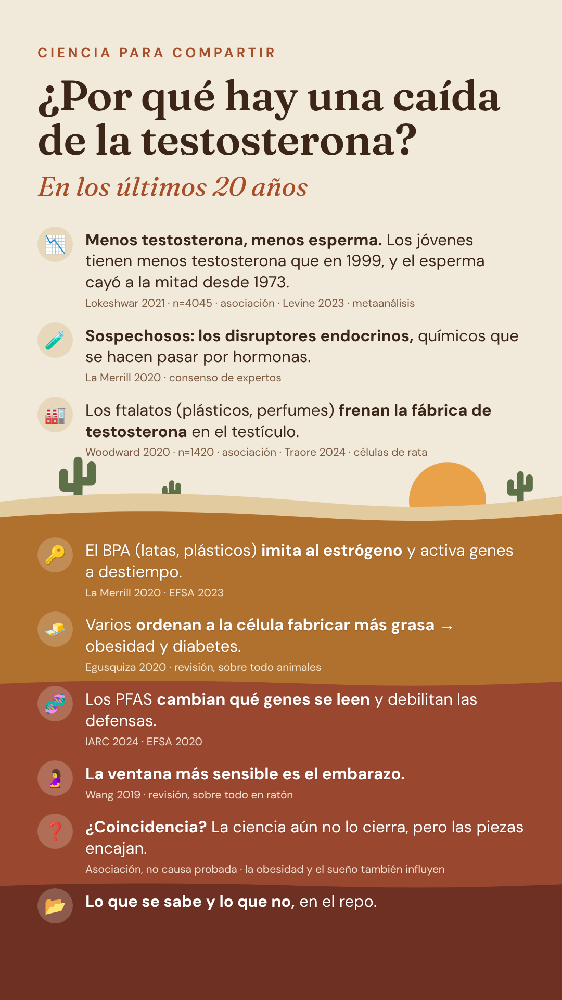
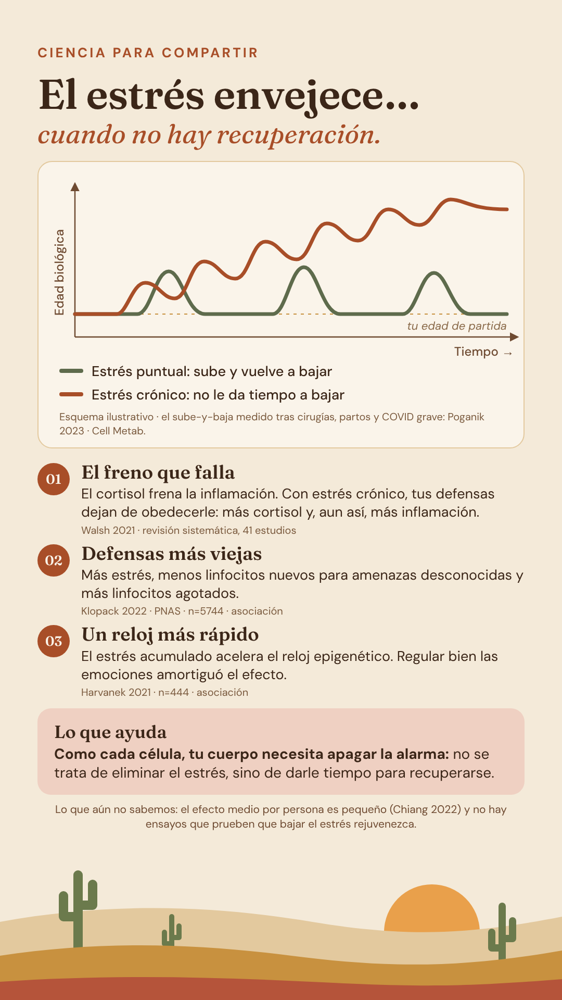
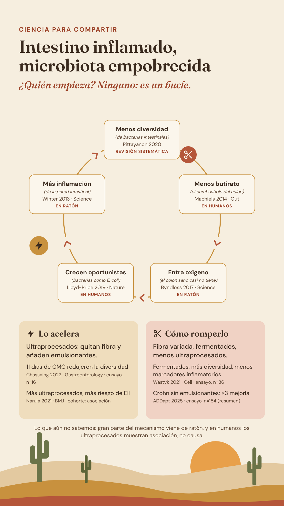
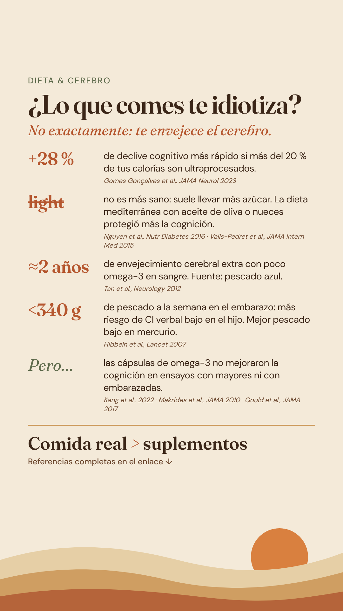

Ciencia y saludScience and healthScience et santé
Cómo lo que comes, el estrés y los químicos del día a día afectan a tus células. Cada tema con sus fuentes y el tipo de evidencia.How what you eat, stress and everyday chemicals affect your cells. Each topic with its sources and the type of evidence.Comment l’alimentation, le stress et les substances du quotidien agissent sur vos cellules. Chaque sujet avec ses sources et le type de preuve.

¿Por qué hay una caída de la testosterona?Why is testosterone falling?Pourquoi la testostérone baisse-t-elle ?
Disruptores endocrinos: ftalatos, BPA, PFAS y obesógenos, cómo actúan dentro de la célula y cómo se regulan en Europa y América. 15 referencias.Endocrine disruptors: phthalates, BPA, PFAS and obesogens, how they act inside the cell and how they’re regulated in Europe and the Americas. 15 references.Perturbateurs endocriniens : phtalates, BPA, PFAS et obésogènes, comment ils agissent dans la cellule et comment ils sont réglementés en Europe et en Amérique. 15 références.

El estrés envejece… cuando no hay recuperaciónStress ages you… when there’s no recoveryLe stress fait vieillir… quand il n’y a pas de récupération
Edad biológica que sube y baja, células que leen la duración del estrés, resistencia al cortisol, inflamación y defensas que envejecen: lo que muestran los estudios y lo que aún no. 17 referencias.Biological age that rises and falls, cells that read how long stress lasts, cortisol resistance, inflammation and aging immune defences: what the studies show and what they don’t yet. 17 references.Âge biologique qui monte et descend, cellules qui lisent la durée du stress, résistance au cortisol, inflammation et défenses qui vieillissent : ce que montrent les études et ce qu’elles ne prouvent pas encore. 17 références.

Intestino inflamado, microbiota empobrecida: ¿quién empieza?Inflamed gut, depleted microbiota: which comes first?Intestin enflammé, microbiote appauvri : qui commence ?
Diversidad, butirato, oxígeno, ultraprocesados y emulsionantes: qué parte del bucle está demostrada en personas y qué parte solo en ratones. 11 referencias.Diversity, butyrate, oxygen, ultra-processed foods and emulsifiers: which part of the loop is shown in people and which only in mice. 11 references.Diversité, butyrate, oxygène, ultra-transformés et émulsifiants : quelle partie de la boucle est démontrée chez l’humain et laquelle seulement chez la souris. 11 références.

¿El azúcar te envejece?Is sugar aging you?Le sucre vous fait-il vieillir ?
Radicales libres, glicación, telómeros, picos de glucosa y edulcorantes: lo que dicen los estudios y lo que no demuestran. 7 referencias.Free radicals, glycation, telomeres, glucose spikes and sweeteners: what the studies show and what they don’t. 7 references.Radicaux libres, glycation, télomères, pics de glycémie et édulcorants : ce que montrent les études et ce qu’elles ne prouvent pas. 7 références.

¿Lo que comes envejece tu cerebro?Is your diet aging your brain?Votre alimentation fait-elle vieillir votre cerveau ?
Ultraprocesados, el mito de lo light, omega-3 y embarazo: lo que dicen los estudios y lo que no demuestran. 8 referencias.Ultra-processed food, the low-fat myth, omega-3 and pregnancy: what the studies show and what they don’t. 8 references.Ultra-transformés, le mythe du « allégé », oméga-3 et grossesse : ce que montrent les études et ce qu’elles ne prouvent pas. 8 références.